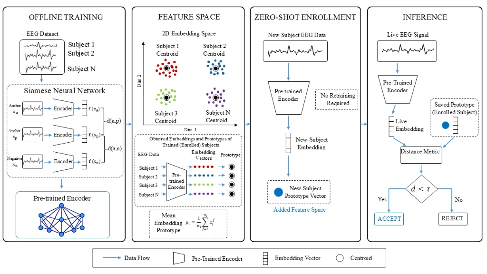

Publications
Published Journal Articles

A Real-Time Cross-Session EEG-Based Biometric System Using Siamese EEGAuthNet and Triplet Manifold Alignment
Chetan R, Anchal C & Jac Fredo AR
This study introduces a real-time cross-session EEG-based biometric authentication system that addresses the fundamental challenge of inter-session variability and distribution drift. By coupling a dedicated Siamese EEGAuthNet architecture with triplet manifold alignment, the framework achieves robust identity verification across longitudinal test sessions.
Read Paper
Fine-Tuning EEG Channel Utilization for Emotionally Stimulated Biometric Authentication
Chetan Rakshe, Christy Bobby Thomas, Mohanavelu Kalathe, Vanteemar S. Sreeraj, Ganesan Venkatasubramanian, Deepesh Kumar, Amalin Prince A, Jac Fredo Agastinose Ronickom
This study introduces a novel framework for EEG-based biometric authentication that addresses the challenge of inter-session noise. By utilizing "emotional logic" paradigms (specifically "disgust" and "grief" stimuli) and a specific channel selection strategy (Frontal-Parietal-Occipital), the system achieved a high authentication accuracy of 98.42% using a KNN classifier, significantly outperforming neutral-state baselines.
Read Paper
Autism Spectrum Disorder Diagnosis Using Fractal and Non-Fractal-Based Functional Connectivity Analysis and Machine Learning Methods
Chetan Rakshe, Suja Kunneth, Soumya Sundaram, Murugappan Murugappan, Jac Fredo Agastinose Ronickom
This research develops a diagnostic pipeline for Autism Spectrum Disorder (ASD) by analyzing the fractal nature of brain connectivity. The study compared fractal functional connectivity (FFC) against traditional Pearson correlation (FC), finding that FFC provides a more robust biomarker. Using a Logistic Regression classifier on the ABIDE-I dataset, the model achieved a classification accuracy of 78.4% by focusing on the Default Mode Network (DMN) and limbic systems.
Read Paper
Age- and Severity-Specific Deep Learning Models for Autism Spectrum Disorder Classification Using Functional Connectivity Measures
Vaibhav Jain, Chetan T. Rakshe, Sandeep Singh Sengar, M. Murugappan, Jac Fredo Agastinose Ronickom
This paper investigates how age and symptom severity impact the accuracy of AI models in diagnosing ASD. The team developed a Deep Neural Network (DNN) utilizing functional connectivity features from fMRI data. The study found that age-specific models (particularly for adolescents) significantly outperform mixed-age models, achieving up to 88.6% accuracy.
Read PaperConference Proceedings
A Real-Time Cross-Session EEG-Based Biometric System Using Siamese EEGAuthNet and Triplet Manifold Alignment
IEEE Sensors, Rotterdam, Netherlands
Cross-Session EEG Biometric Identification Using Mel-Spectrograms and Hybrid CNN-Transformer Architectures
International Conference on Mathematical Modelling and Bioinformatics (ICMMB), Singapore
Impact of Feature Normalisation on EEG-Based Biometric Authentication
48th Annual International Conference of the IEEE Engineering in Medicine and Biology Society (EMBC), Toronto, Canada
Event-Based EEG Band Power Framework for Surprise Detection in Aviation
Conference on Advances in Aerospace and Energy Systems, Mahendragiri, Tamil Nadu, India
Characterization of Autism Spectrum Disorder Using Structural MRI and Pearson Correlation
Recent Advances in Medical Science and Technology (RAMST), IIT Kharagpur, India
Analysis of fMRI BOLD Time-Series Signals of Autism Spectrum Disorder Using Feature Extraction Techniques
Recent Advances in Medical Science and Technology, IIT Kharagpur, India
Identification of Optimal Features for EEG-Based Authentication in Response to Emotional State
39th Indian Engineering Congress, Kolkata, India
Leveraging Brain Channels for EEG Authentication Across Emotional States
International Conference on Experimental Mechanics (ICEM 2024), IIT Madras, Chennai, India
Optimizing EEG Channels for Emotion-Aware Biometric Authentication Using Machine Learning
23rd International Conference on Mechanics in Medicine and Biology, Bruxelles, Belgium
Diagnostic Classification of ASD Improves with Dynamic FC of fMRI Compared to Static FC
61st IBSIS and 61st Rocky Mountain Bioengineering Symposium (RMBS), Kenner, USA
Diagnostic Classification of ASD Using Fractal Functional Connectivity of fMRI and Logistic Regression
21st International Conference on Informatics, Management, and Technology in Healthcare (ICIMTH), Athens, Greece
Advancing ASD Diagnostic Classification with Features of Continuous Wavelet Transform of fMRI and Machine Learning Algorithms
5th IEEE International Conference on Cybernetics, Cognition and Machine Learning Applications, Elmshorn, Germany
Investigation of Brain Networks in Autism Using Fractal, Non-Fractal and Pearson Correlation Methods
XXII International Conference on Mechanics in Medicine and Biology, Bologna, Italy